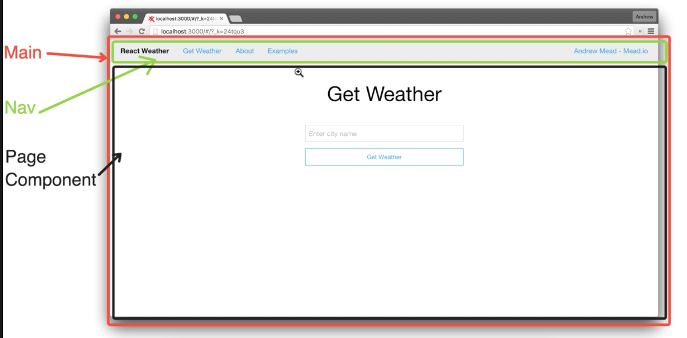

Introduction
We are going to build a simple weather app to know what temperature has a location
It will be a Single Page App with a number of screens
Each screen will be linked to a unique url (routing)
Weather info will be fetched from an Weather API
Component strategy
The Main Component will not render anything , it will have only children
The Nav component will be inside Main and will also render children
And the page component will change when screen will change

Presentational and Container Components
You’ll find your components much easier to reuse and reason about if you divide them into two categories.
I call them Container and Presentational components* but I also heard Fat and Skinny, Smart and Dumb, Stateful
and Pure, Screens and Components, etc. These all are not exactly the same, but the core idea is similar.
My presentational components:
- Are concerned with how things look.
- May contain both presentational and container components** inside, and usually have some DOM markup and styles of their own.
- Often allow containment via this.props.children.
- Have no dependencies on the rest of the app, such as Flux actions or stores.
- Don’t specify how the data is loaded or mutated.
- Receive data and callbacks exclusively via props.
- Rarely have their own state (when they do, it’s UI state rather than data).
- Are written as functional components unless they need state, lifecycle hooks, or performance optimizations.
- Examples: Page, Sidebar, Story, UserInfo, List.
My container components:
- Are concerned with how things work.
- May contain both presentational and container components** inside but usually don’t have any DOM markup of their own except for some wrapping divs, and never have any styles.
- Provide the data and behavior to presentational or other container components.
- Call Flux actions and provide these as callbacks to the presentational components.
- Are often stateful, as they tend to serve as data sources.
- Are usually generated using higher order components such as connect() from React Redux, createContainer() from Relay, or Container.create() from Flux Utils, rather than written by hand.
- Examples: UserPage, FollowersSidebar, StoryContainer, FollowedUserList.
Adding React Router
We use this React plugin for make routing to different pages.
Github: https://github.com/ReactTraining/react-router
npm install react-router@2.0.0
Require inside app.jsx:
var {Route, Router, IndexRoute, hashHistory} = require('react-router');
ReactDOM.render(
<Router history={hashHistory}>
<Route path="/" component={Main}>
<Route path="about" component={About}/>
<Route path="examples" component={Examples}/>
<IndexRoute component={Weather}/>
</Route>
</Router>,
document.getElementById('app')
);
and inside Nav.jsx:
var {Link, IndexLink} = require('react-router');
var Nav = () => {
return (
<div>
<h2>Nav Component</h2>
<IndexLink to="/" activeClassName="active" activeStyle={{fontWeight: 'bold'}}>Get Weather</IndexLink>
<Link to="/about" activeClassName="active" activeStyle={{fontWeight: 'bold'}}>About</Link>
<Link to="/examples" activeClassName="active" activeStyle={{fontWeight: 'bold'}}>Examples</Link>
</div>
);
};
With Link we can specify active styles for active option in Menu
Stateless functional components
There is an abbreviated way to rewrite presentational componentes using arrow functions. React calls them stateless functional components
This code for About component:
var About = React.createClass({
render: function() {
return (
<h3>About Component</h3>
);
}
});
turn into:
var About = (props) => {
return (
<h3>About Component</h3>
);
};
This transformation can only be done in components with only a render method and the don't store any state information
Another example with the WeatherMessage component. Here we use destructuring to get the values of temp and location from props:
var WeatherMessage = ({temp, location}) => {
return (
<h3>It's it {temp} in {location}.</h3>
)
};
App files
public/index.html
<!DOCTYPE html>
<html>
<head>
<meta charset="UTF-8"/>
</head>
<body>
<div id="app"></div>
<script src="bundle.js"></script>
</body>
</html>
app/app.jsx
var React = require('react');
var ReactDOM = require('react-dom');
var {Route, Router, IndexRoute, hashHistory} = require('react-router');
var Main = require('Main');
var Weather = require('Weather');
var About = require('About');
var Examples = require('Examples');
ReactDOM.render(
<Router history={hashHistory}>
<Route path="/" component={Main}>
<Route path="about" component={About}/>
<Route path="examples" component={Examples}/>
<IndexRoute component={Weather}/>
</Route>
</Router>,
document.getElementById('app')
);
app/components/Main.jsx
var React = require('react');
var Nav = require('Nav');
var Main = (props) => {
return (
<div>
<Nav/>
<h2>Main Component</h2>
{props.children}
</div>
);
}
module.exports = Main;
app/components/Nav.jsx
var React = require('react');
var {Link, IndexLink} = require('react-router');
var Nav = () => {
return (
<div>
<h2>Nav Component</h2>
<IndexLink to="/" activeClassName="active" activeStyle={{fontWeight: 'bold'}}>Get Weather</IndexLink>
<Link to="/about" activeClassName="active" activeStyle={{fontWeight: 'bold'}}>About</Link>
<Link to="/examples" activeClassName="active" activeStyle={{fontWeight: 'bold'}}>Examples</Link>
</div>
);
};
module.exports = Nav;
app/components/About.jsx
var React = require('react');
var About = (props) => {
return (
<h3>About Component</h3>
)
};
module.exports = About;
app/components/Examples.jsx
var React = require('react');
var Examples = (props) => {
return (
<h3>Examples Component</h3>
)
};
module.exports = Examples;
app/components/Weather.jsx
var React = require('react');
var WeatherForm = require('WeatherForm');
var WeatherMessage = require('WeatherMessage');
var openWeatherMap = require('openWeatherMap');
var Weather = React.createClass({
getInitialState: function () {
return {
isLoading: false
}
},
handleSearch: function (location) {
var that = this;
this.setState({isLoading: true});
openWeatherMap.getTemp(location).then(function (temp) {
that.setState({
location: location,
temp: temp,
isLoading: false
});
}, function (errorMessage) {
that.setState({isLoading: false});
alert(errorMessage);
});
},
render: function () {
var {isLoading, temp, location} = this.state;
function renderMessage () {
if (isLoading) {
return <h3>Fetching weather...</h3>;
} else if (temp && location) {
return <WeatherMessage temp={temp} location={location}/>;
}
}
return (
<div>
<h3>Weather Component</h3>
<WeatherForm onSearch={this.handleSearch}/>
{renderMessage()}
</div>
)
}
});
module.exports = Weather;
app/components/WeatherForm.jsx
var React = require('react');
var WeatherForm = React.createClass({
onFormSubmit: function (e) {
e.preventDefault();
var location = this.refs.location.value;
if (location.length > 0) {
this.refs.location.value = '';
this.props.onSearch(location);
}
},
render: function () {
return (
<div>
<form onSubmit={this.onFormSubmit}>
<input type="text" ref="location"/>
<button>Get Weather</button>
</form>
</div>
);
}
});
module.exports = WeatherForm;
app/components/WeatherMessage.jsx
var React = require('react');
var WeatherMessage = ({temp, location}) => {
return (
<h3>It's it {temp} in {location}.</h3>
)
};
module.exports = WeatherMessage;
app/api/openWeatherMap.jsx
var axios = require('axios');
const OPEN_WEATHER_MAP_URL = 'http://api.openweathermap.org/data/2.5/weather?appid=c4e735ea8bd7e7b6dc8368c752517b2d&units=imperial';
module.exports = {
getTemp: function (location) {
var encodedLocation = encodeURIComponent(location);
var requestUrl = `${OPEN_WEATHER_MAP_URL}&q=${encodedLocation}`;
return axios.get(requestUrl).then(function (res) {
if (res.data.cod && res.data.message) {
throw new Error(res.data.message);
} else {
return res.data.main.temp;
}
}, function (res) {
throw new Error(res.data.message);
});
}
}
webpack.config.js
module.exports = {
entry: './app/app.jsx',
output: {
path: __dirname,
filename: './public/bundle.js'
},
resolve: {
root: __dirname,
alias: {
Main: 'app/components/Main.jsx',
Nav: 'app/components/Nav.jsx',
Weather: 'app/components/Weather.jsx',
WeatherForm: 'app/components/WeatherForm.jsx',
WeatherMessage: 'app/components/WeatherMessage.jsx',
About: 'app/components/About.jsx',
Examples: 'app/components/Examples.jsx',
openWeatherMap: 'app/api/openWeatherMap.jsx'
},
extensions: ['', '.js', '.jsx']
},
module: {
loaders: [
{
loader: 'babel-loader',
query: {
presets: ['react', 'es2015', 'stage-0']
},
test: /\.jsx?$/,
exclude: /(node_modules|bower_components)/
}
]
},
devtool: 'cheap-module-eval-source-map'
};
Start app in local
First compile with webpack into bundles.js
-w flag keep watching for changes and recompile to refresh changes
webpack -w
Run webserver in a separate terminal
node server.js